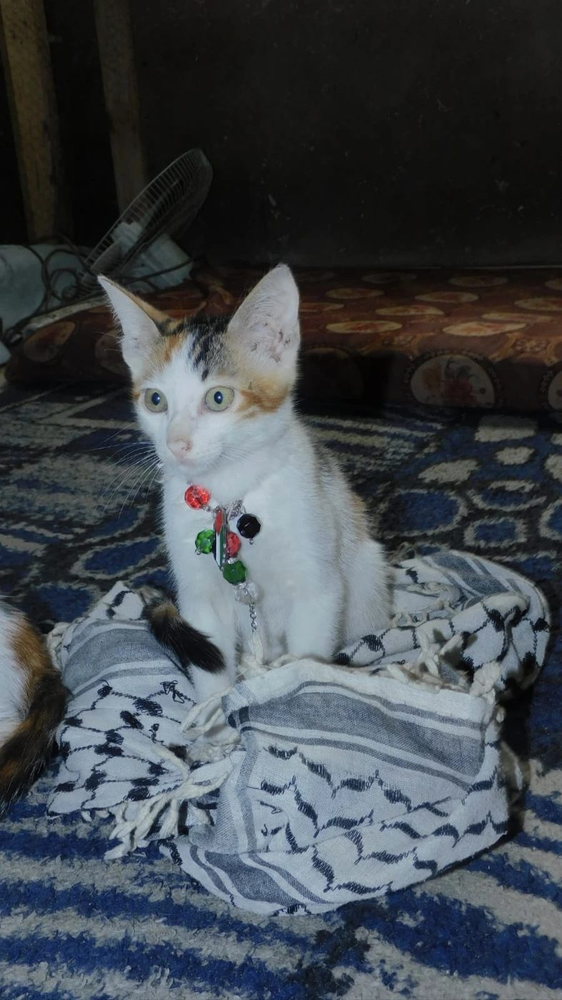

The animals of Cat Rescue
Two mother cats, twelve kittens and one cat who came alone – rescued from the rubble of North Gaza. Tap an image to enlarge it.
Sumada & her 7 kittens
It all began with Sumada: the first mother cat at Cat Rescue – with seven little ones who now romp curiously through the house.
Mother without a name & 5 kittens
Found among the rubble: a tabby mother cat with five kittens. The mother does not have a name yet – who will give her one?
Still unnamed
These cats are still waiting for a name. With a naming sponsorship, you can choose it.
Black-and-white cat
Came alone, without babies. Yellow-green eyes, white paws – and still without a name.
Tabby mother cat
The mother of Elsa, Luna, Subaia, Mulan and Hind.
Back home & our dogsA happy ending and more animals in our care
Back home: One cat we found still had a home – Cat Rescue was able to find her owner, and he took her back in.
Dogs: Besides the cats, a few dogs are also cared for. Their introductions will follow.
Anisa
Our little Anisa
Anisa was a baby kitten from the rubble. Despite all the care, she did not make it. Inna lillahi wa inna ilayhi raji'un – we belong to Allah, and to Him we return.
Tapping shows the memorial picture from Dar Al-Rahma Cat Rescue.
An animal still has no name?
Become a naming sponsor. The name auction starts with the founding of the gUG.
Sponsorship & naming Wish calendar “Paws of Hope”Cat Rescue shows new rescues and stories first on Instagram and TikTok:
Instagram · @daralrahmacatrescue TikTok · @daralrahmacatrescue